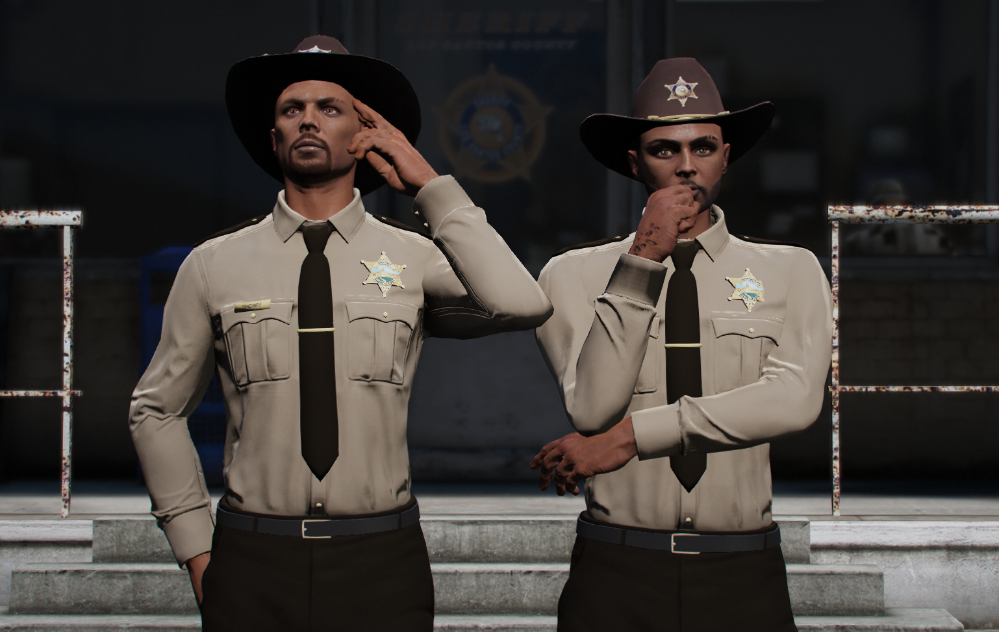
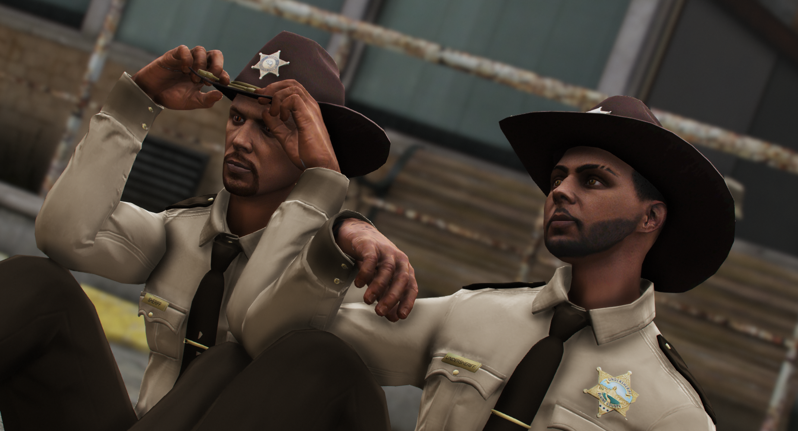
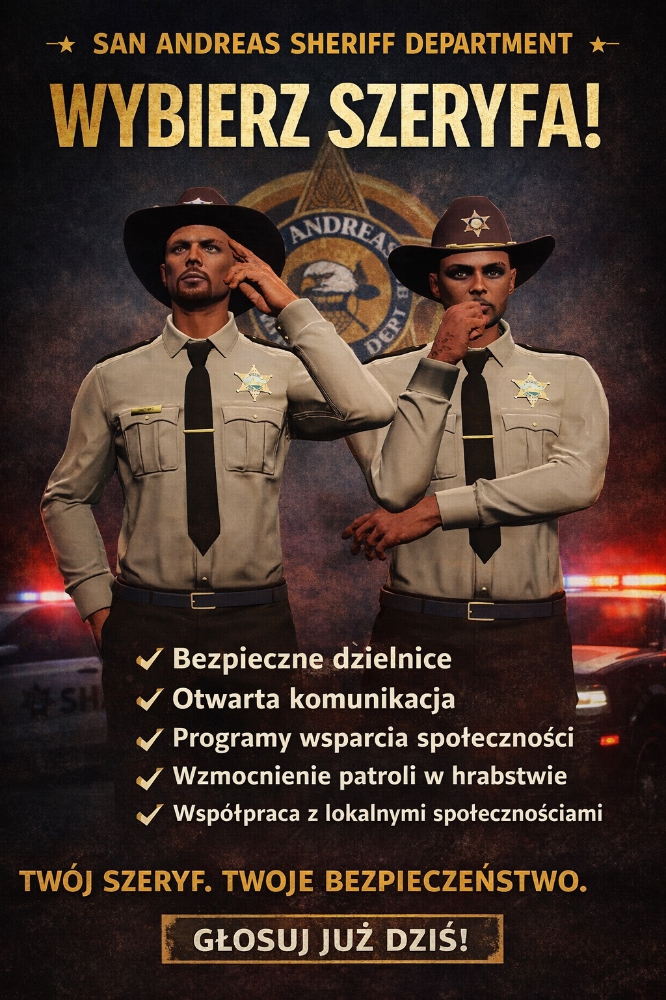
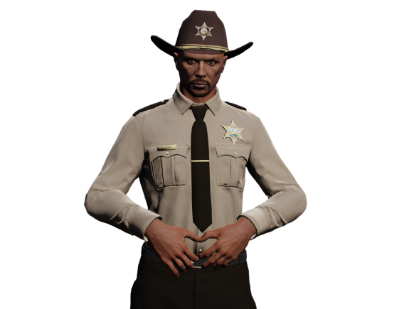
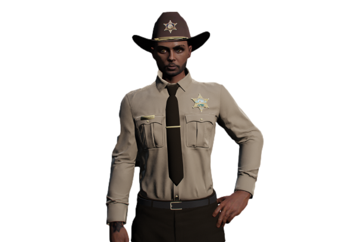

Galeria zdjęć



×


Kandydat na Sheriffa San Andreas

Kandydat na UnderSheriffa San Andreas
Bezpieczeństwo • Pomoc • Zaangażowanie
San Andreas to nasze wspólne miasto i hrabstwo – miejsce tętniące życiem, pełne energii i różnorodności, ale także obszar, w którym nie brakuje wyzwań związanych z bezpieczeństwem. Wierzę, że każdy mieszkaniec powinien mieć prawo czuć się bezpiecznie – w swoim domu, na ulicach swojej dzielnicy, a także w każdej części naszego hrabstwa. To poczucie bezpieczeństwa jest fundamentem życia w silnej, zintegrowanej społeczności.
Kandyduję na stanowisko Sheriffa, ponieważ chcę, aby nasza policja była czymś więcej niż tylko reakcją na zagrożenia. Funkcjonariusze powinni być prawdziwym wsparciem dla obywateli – obecni nie tylko w sytuacjach kryzysowych, ale również na co dzień, by aktywnie chronić naszą społeczność, słuchać jej potrzeb i budować zaufanie.
Razem z moim Undersheriffem dążymy do tego, aby nasz departament był bliżej ludzi – byśmy nie tylko egzekwowali prawo, ale też rozumieli, czym naprawdę żyje nasze hrabstwo. Chcemy stworzyć służbę, która współpracuje z mieszkańcami, reaguje na ich potrzeby i działa w interesie całej społeczności. Wierzę, że tylko wspólnie możemy sprawić, że San Andreas stanie się miejscem bezpiecznym, przyjaznym i otwartym dla każdego.
Nazywam się Derek Parrish i od ponad dziesięciu lat z dumą służę w policji. Moja kariera rozpoczęła się w San Fierro, na stacji 3, gdzie miałem okazję pracować w różnorodnych jednostkach i zdobywać doświadczenie w trudnych i wymagających sytuacjach. Przez lata nauczyłem się, jak ważne jest połączenie profesjonalizmu, empatii i konsekwencji w działaniu.
Jako funkcjonariusz stawiam na współpracę z zespołem i budowanie zaufania w społeczności, w której służę. Wierzę, że bezpieczeństwo to nie tylko reagowanie na zdarzenia, ale także zapobieganie im poprzez zrozumienie potrzeb mieszkańców i proaktywne działanie.
Cenię sobie rozwój osobisty – ciągle doskonalę swoje umiejętności, uczę się nowych procedur i technologii, które pomagają skuteczniej pełnić służbę. Moim celem jest nie tylko ochrona ludzi, ale też inspirowanie młodszych funkcjonariuszy do pracy w oparciu o wartości, które uważam za fundamentalne: uczciwość, szacunek i odwaga.
1. Więcej patroli w społecznościach
Bezpieczeństwo mieszkańców jest najważniejsze – zwiększymy liczbę patroli w dzielnicach i na terenach wiejskich.
2. Szybsze reagowanie na zgłoszenia
Każde zgłoszenie mieszkańca będzie traktowane poważnie i reagowane szybko oraz skutecznie.
3. Programy dla społeczności
Spotkania, prelekcje i warsztaty dla obywateli w celu edukacji i zapobiegania przestępczości.
4. Współpraca ze wszystkimi służbami
Razem z LSPD i innymi jednostkami zapewnimy lepsze bezpieczeństwo dla mieszkańców.
5. Ścisła współpraca z jednostką DOC
Zobowiązujemy się do ścisłej współpracy pomiędzy jednostką Sheriff Department a Departament of Corrections.
6. Bezpieczne miejsca publiczne
Poprawimy bezpieczeństwo w parkach, szkołach i na placach zabaw poprzez częstsze patrole i monitoring.
7. Edukacja w zakresie bezpieczeństwa
Organizacja szkoleń i kampanii informacyjnych dla mieszkańców, jak chronić siebie i swoją własność.
8. Szybkie reagowanie na zagrożenia drogowe
Zwiększymy obecność patroli drogowych, aby poprawić bezpieczeństwo na ulicach i autostradach.
Bezpieczeństwo w San Andreas to nie tylko praca Sheriff's Department. To wspólne działanie wszystkich służb – zarówno LSPD, służb miejskich, jak i lokalnych organizacji społecznych. Każdy mieszkaniec powinien czuć, że niezależnie od miejsca zamieszkania czy okoliczności, zawsze istnieje system wsparcia, który chroni jego życie, zdrowie i mienie.
Planujemy prowadzenie regularnych wspólnych akcji z LSPD, które pozwolą szybciej reagować na incydenty, lepiej kontrolować tereny o podwyższonym ryzyku i zapobiegać przestępczości. Wspólne patrole, wymiana informacji między jednostkami oraz koordynacja działań w czasie rzeczywistym pozwolą mieszkańcom czuć się bezpiecznie zarówno w centrach miast, jak i na przedmieściach oraz obszarach wiejskich.
Współpraca ze wszystkimi służbami pozwoli również na szybkie reagowanie w nagłych sytuacjach – od wypadków drogowych po zagrożenia publiczne. Chcemy, aby mieszkańcy wiedzieli, że Sheriff’s Department i LSPD działają w pełnej koordynacji, nie konkurują ze sobą, lecz wspólnie tworzą sieć bezpieczeństwa, na którą każdy może liczyć.
Ważnym elementem naszych działań będzie również ścisła współpraca z Departamentem Corrections. Dzięki niej zapewnimy lepszy nadzór nad osobami odbywającymi karę, sprawniejszy przepływ informacji oraz wsparcie w procesach resocjalizacyjnych. Wspólnie będziemy działać także w zakresie postępowań sądowych, aby każdy etap – od zatrzymania po wykonanie wyroku – przebiegał sprawnie i skutecznie.
Równie istotna będzie współpraca z Departamentem Justice, która pozwoli na skuteczne prowadzenie spraw sądowych. Dzięki pełnej koordynacji między Sheriff’s Department, DOJ oraz innymi służbami, mieszkańcy będą mieli pewność, że system sprawiedliwości działa szybko, rzetelnie i bez zbędnych opóźnień.
1. Bezpieczne dzielnice – zwiększenie obecności patroli w miejscach wymagających większego nadzoru, aby mieszkańcy czuli się pewnie w swoich domach i na ulicach, zarówno w centrach miast, jak i na przedmieściach.
2. Otwarta komunikacja – regularne spotkania z mieszkańcami, gdzie każdy może zgłosić uwagi, propozycje lub obawy dotyczące bezpieczeństwa w swojej okolicy. Chcemy, aby głos obywateli miał realny wpływ na działania departamentu.
3. Współpraca z DOC – rozwiniemy ścisłą współpracę z Departamentem Corrections, aby zapewnić skuteczny nadzór nad osobami odbywającymi karę oraz procesem ich powrotu do społeczeństwa. Wspólne działania pozwolą na lepszą wymianę informacji, zwiększenie bezpieczeństwa funkcjonariuszy oraz mieszkańców, a także wdrożenie programów resocjalizacyjnych. Dodatkowo będziemy aktywnie wspierać DOC w działaniach związanych z procesami sądowniczymi, zapewniając sprawny przepływ informacji i współpracę na każdym etapie postępowania.
4. Współpraca z DOJ – będziemy ściśle współpracować z Departamentem Justice w zakresie postępowań sądowych. Naszym celem jest zapewnienie sprawnego przebiegu procesów, pełnej koordynacji między służbami a sądami oraz budowanie systemu, w którym sprawiedliwość działa szybko, skutecznie i bez zbędnych opóźnień.
4. Programy wsparcia społeczności – organizacja prelekcji, warsztatów i akcji edukacyjnych we współpracy ze szkołami, lokalnymi organizacjami i społecznościami, aby mieszkańcy czuli się chronieni i wiedzieli, jak współpracować z służbami.
5. Wzmocnienie patroli drogowych – zwiększenie liczby funkcjonariuszy na drogach i autostradach w celu poprawy bezpieczeństwa ruchu drogowego oraz szybkiego reagowania na wypadki i niebezpieczne sytuacje.
6. Bezpieczeństwo w miejscach publicznych – szczególna uwaga na parki, place zabaw i miejsca spotkań społecznych, poprzez regularne patrole i monitoring, aby każdy mógł korzystać z przestrzeni publicznej bez obaw.
7. Współpraca z lokalnymi społecznościami – regularna wymiana informacji i wspólne akcje z radami dzielnicowymi i organizacjami społecznymi, aby działania departamentu odpowiadały realnym potrzebom mieszkańców.8. Szybka reakcja na zagrożenia – usprawnienie systemu zgłoszeń, aby każda sytuacja wymagająca interwencji była obsłużona natychmiast, minimalizując czas oczekiwania i zwiększając poczucie bezpieczeństwa obywateli.
Chcemy budować przyszłość, w której każdy mieszkaniec San Andreas będzie czuł się bezpiecznie i pewnie – niezależnie od tego, czy znajduje się w centrum Los Santos, na przedmieściach, czy w mniejszych miejscowościach hrabstwa. Naszym celem jest nie tylko reagowanie na zagrożenia, ale przede wszystkim aktywnie chronić społeczność, wspierać jej potrzeby i budować zaufanie między obywatelami a służbami porządkowymi.
Sheriff’s Department będzie zawsze blisko mieszkańców – dostępne, profesjonalne i gotowe do działania w każdej sytuacji. Chcemy, aby każdy czuł, że może liczyć na nasze wsparcie, niezależnie od problemu, z jakim się zetknie. Będziemy prowadzić programy edukacyjne, spotkania w dzielnicach i inicjatywy społeczne, które wzmocnią bezpieczeństwo, więzi między mieszkańcami i poczucie odpowiedzialności obywatelskiej.
Proszę o zaufanie i poparcie mojej kandydatury – razem możemy uczynić San Andreas miejscem, w którym prawo, porządek i troska o obywateli idą zawsze w parze. Razem możemy budować hrabstwo, w którym każdy będzie czuł się bezpiecznie, szanowany i wspierany przez swoich funkcjonariuszy. Razem możemy uczynić San Andreas nie tylko bezpiecznym, ale także miejscem, w którym społeczność i służby tworzą prawdziwe partnerstwo.
Nowe patrole miejskie rozpoczęły działalność w centrum Los Santos, aby zwiększyć bezpieczeństwo mieszkańców...
W tym tygodniu odbyły się spotkania z mieszkańcami w hrabstwie, podczas których omawiano plany nowego departamentu...


